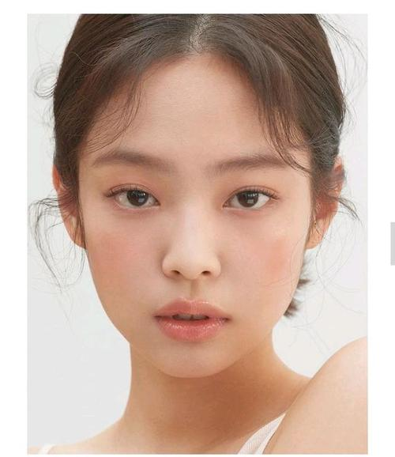
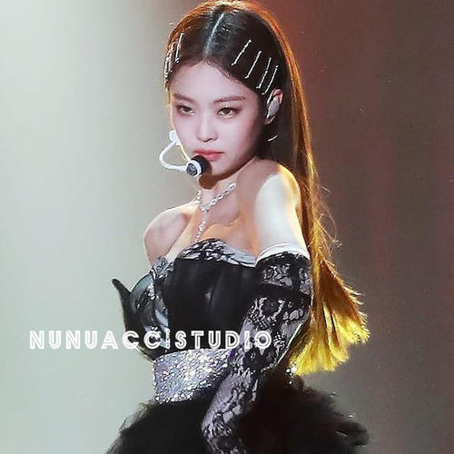

Jennie (김 제 니), was born on January 16, 1996 in Seoul, South Korea, special city jiangnan area residents of hole, south Korean female, female vocal group BLACKPINK members. On August 8, 2016, she debuted as a member of Blackpink and released her first single album "Square One" with the group. On November 1, the group released their second single album "Square Two". On August 30, 2017, the group officially released their Japanese music album "BlackPink". On June 15, 2018, the group released the mini-album "Square Up"; From July 24, the band will hold their first concert "Blackpink Arena Tour 2018" in Japan. On November 12, he released his single "Solo". On April 5, 2019, the group released their mini-album "Kill This Love". On October 16, the group released a Japanese version of their mini album Kill This Love. On May 28, 2020, Sour Candy, a cooperative single with Lady Gaga, was released with the group. On June 26, the single "How You Like That" was released with the group; On August 28, the group released a cooperative single "Ice Cream" with Selena Gomez. On October 2nd, THE group released their first official ALBUM The Album.
Jennie to stable singing strength with its mature and beautiful appearance by people's attention, she had activity experience before her debut, both beautiful appearance, singing and dancing strength and the advantages of many languages, strength is recognized, in addition, she has participated in a variety of songs to show its personal charm, increase the impression of people. In solo, she walks in the streets of exotic places, which makes her curious about the concept of the song. The song introduces her beautiful voice line and simple melody lines, and the straightforward lyrics capture the ears of the listeners. Through the song, we can see her appearance and inner coexistence of girlish heart, and independent and strong woman, the two are in obvious contrast.
  Look at next page